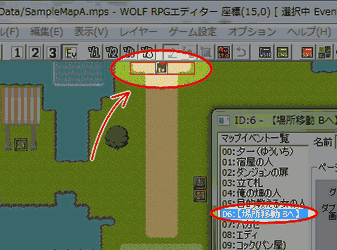
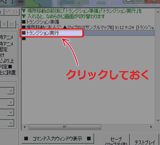
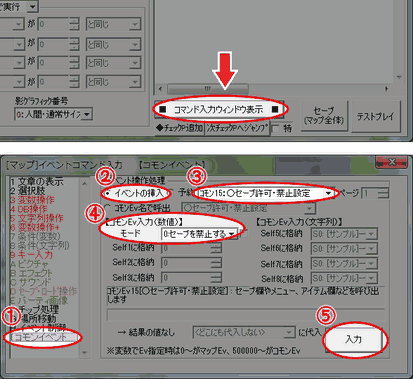
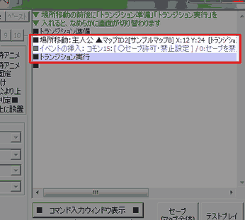
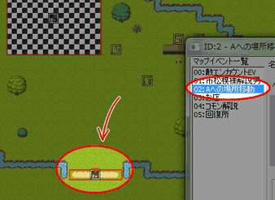
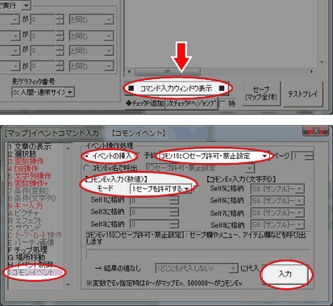
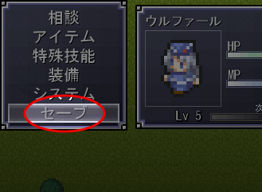

いつでもどこでもセーブできるゲームは安心感があるものですが、
セーブポイント以外ではセーブできない、
という仕掛けには実は特別な効果があります。
例えば、「セーブ」コマンドの名前が「レポート」だったとして、
シナリオの流れで敵にレポート帳を奪われてしまい、
取り戻すまで一時的にセーブができなくなる、
といった演出があるとするとどうでしょう。
シナリオだけでは表現できない緊張感を出すことができますね。
そう、安心感だけがゲームの良さでは無いのです。
また、いつでもどこでもセーブできるゲームでは、
それ以降ゲームが進行しなくなる状態、通称「詰み」が起こった時に
セーブしてしまうと、それまでのプレイが全部無駄になってしまいます。
セーブ禁止を応用すると、この「詰み」状態でセーブさせないようにして、
この問題を解消することができます。
このようなことは「メニューからのセーブの禁止」で行うことができます。
今回は、サンプルマップBをセーブ禁止マップにすることで、
セーブ禁止マップの作り方を習得します。
(なお、上記の例でちらっと触れたセーブポイントですが、その作り方は
「イベント内で、メニューやセーブ画面を出したい」
で解説していますので、必要な方はそちらもご参照ください。)
|
今回はサンプルマップBでのみセーブ禁止にするようにしますので、 「サンプルマップAからサンプルマップBへ移動するときにセーブ禁止」と 「サンプルマップBからサンプルマップAへ移動するときにセーブ許可」の ２つを行うことにします。 |
| 【1】 イベントを開く サンプルマップAからサンプルマップBに移動するときに セーブを禁止するよう設定します。 「サンプルマップA」のイベント「06:【場所移動 Bへ】」を ダブルクリックで開いてください。 |
 |
| 【2】 セーブ禁止コマンド挿入場所の選択 開いたウィンドウの右半分弱をイベントコマンド欄が占めていますが、 ここに入力されている場所移動の直後にセーブ禁止を入れます。 場所移動コマンドの１つ下に入力されているコマンド 「トランジション実行」にカーソルを合わせて １クリックしておいてください。 |
 |
| 【3】 イベントの入力 イベントウィンドウの右下にある 「■ コマンド入力ウィンドウ表示 ■」をクリックしてください。 ①イベントコマンド入力ウィンドウのタブを 「I コモンイベント」に変更します。 ②ラジオボタンで「イベントの挿入」を選択し (デフォルトではここが選択されています)、 ③右のプルダウンリストで「ｺﾓﾝ15:○セーブ許可・禁止設定」を 選択してください。 ④【コモンEv入力(数値)】の欄で、 「モード」を「0:セーブを禁止する」に設定してください。 ⑤最後に、ウィンドウ右下の「入力」ボタンを押します。 |
 |
| 【4】 イベントコマンド挿入位置の確認 コマンドが正しい位置に挿入できているか確認します。 イベントコマンド入力ウィンドウを閉じて、 マップイベントウィンドウのイベントコマンド欄を見てみましょう。 場所移動とトランジション実行の間に「イベントの挿入」が 入っていればOKです。 |
 |
| 【1】 イベントを開く 次に、サンプルマップBからサンプルマップAに移動するときに セーブを許可するよう設定します。 「サンプルマップB」のイベント「02:Aへの場所移動」を ダブルクリックで開いてください。 |
 |
| 【2】 セーブ禁止コマンドの挿入 以降、手順１と同様にして、 セーブ許可･禁止設定コモンイベントを入力します。 ただし、今度は「モード」は「1:セーブを許可する」にしてください。 |
 |
|
正しくセーブ禁止/許可できているかテストプレイしてみます。 セーブ禁止状態ではメニューの「セーブ」選択肢が少し暗い色になり、 決定キーを押しても選択できなくなっているはずです。 まずサンプルマップAでメニューからのセーブができることを確認し、 次にサンプルマップBではセーブができなくなっていればOKです。 その後サンプルマップAに戻るとセーブができるようになっていれば完璧です。 もしどれか１つでもうまく行っていないようならば、 手順を見直してみてくださいね。 お疲れ様でした！ |
 |
|
■１つのダンジョンをまるごとセーブ禁止にする 今回は1マップでのみセーブ禁止にしましたが、ダンジョン全体を セーブ禁止にしたい場合は、そのダンジョンの入り口の 場所移動でだけセーブ禁止/許可をすればよいでしょう。 セーブ禁止/許可の設定は、基本的にこのコマンド以外では変更されませんから、 ダンジョン進入時に一度「セーブ禁止」に設定すれば、許可に設定するまでは 何回場所移動しようとずっとセーブ禁止のままです。 ところで、セーブ禁止のダンジョンは、(敵やトラップの強さにもよりますが) ダンジョンの規模が大きくなるにつれて難易度が跳ね上がりますので、 セーブポイントや、体力などを回復してくれる回復ポイントの配置にも 注意してみてください。ダンジョンの真ん中あたりに休憩地点として置くもよし、 ボス直前のマップに置くもよしですね。 なお、セーブポイントや回復ポイントの作り方は別のトピックで ご紹介していますので、そちらをご参照ください。 ・セーブポイント→「イベント内で、メニューやセーブ画面を出したい」 ・ 回復ポイント →「主人公を回復させたりダメージを与えたい」 |
|
■「詰み」の防止策としての「セーブ禁止」 「起こる前の状態に戻れないイベント」には「詰み」の危険性が伴います。 「詰み」とは「ゲームがそれ以降進行しなくなってしまった状態」のことで、 場合によってはゲームにとって極めて重大なバグになりうる要素のひとつです。 「詰みが起こる」ことを「詰む」と言う場合が多いので、 このトピックでもそのように書くこととします。 よくある「詰み」の事例としては、以下のようなことが挙げられます。 ・後戻りできないイベント戦で絶対に勝てない敵に追いつめられてしまい、 もうゲームオーバーになるしかなくなってしまった。 ・押して動かせる岩がたくさんあるマップで動かし方を間違えてしまい、 進むことも戻ることも出来なくなってしまった。 ・一度進入するとクリアするまで出られないダンジョンに入ったところ、 敵が強すぎてまったく進めず、レベルを上げてきて挑戦しなおしたい ところなのに仕様のせいで出られずどうしようもなくなった。 プレイ中にただ詰んだだけなら、普通はリセットして次は詰まないように やり直すものなのですが、もし詰んだ状態でセーブしてしまっていると最悪です。 リセットではもちろん戻りませんので、「はじめから」を余儀なくされます。 せっかくそこまでプレイしてもらえたのに、これでプレイヤーさんの プレイ意欲がなくなってしまったら勿体なさすぎますよね…。 テストプレイしてみて、もしも詰みそうなイベントや状況を見つけたら、 詰みの解消方法として、まずは「セーブ禁止」を入れてみることを考えると いいかもしれません。 ・後戻りできないイベント戦に入る前に、「セーブ禁止」にしておく。 ・押して動かせる岩の仕掛けがあるマップに入る前に「セーブ禁止」にしておく。 ・一度進入するとクリアするまで出られないダンジョンに入る前に「セーブ禁止」にしておく。 他の解消方法が有効な場合もあると思いますが、「セーブ禁止」のアイディアで 案外すんなりと詰みを解消することができたりします。 ただし、「セーブ禁止」を使う場合は「セーブ許可」とセットで使うことを 心掛けてください。どこかで「セーブ禁止」をした場合は、 そのイベントが終わったら必ず「セーブ許可」を設定する。 複数の抜け道（場所移動の呪文などは注意です）がある場合は、 全部の抜け道に対して「セーブ許可」を設定しなければいけません。 |
＜執筆者：ウディタ公式ガイド執筆コミュ。＞